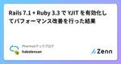

PharmaXテックブログのフィード
https://zenn.dev/p/pharmax
PharmaXエンジニアチームのテックブログです。エンジニアメンバーが、PharmaXの事業を通じて得た技術的な知見や、チームマネジメントについての知見を共有します。 PharmaXエンジニアチームやメンバーの雰囲気が分かるような記事は、note（https://note.com
フィード

Rails 7.1 + Ruby 3.3 で YJIT を有効化してパフォーマンス改善を行った結果 18
18
PharmaXテックブログのフィード
この記事の概要こんにちは。PharmaX でエンジニアをしている諸岡（@hakoten）です。この記事では、薬局DX事業部のバックエンドで採用しているRuby on Railsのアプリケーションについて、Rubyバージョンを3.3にアップグレードし、YJITを有効化した結果、どのようにパフォーマンスが向上したかをご紹介します。現在のRuby on Railsのバージョンは、「7.1.3」になります。 YJITについての簡単な説明YJITとは、CRuby内部に組み込まれた軽量のJIT機能で、遅延コード生成を行い、必要なメソッドを部分的にコンパイルすることで高速化を図る仕組み...
10日前

Github Actionsを活用してrelaseブランチ作成、GitHubリリースとタグ作成を自動化する
PharmaXテックブログのフィード
この記事の概要こんにちは。PharmaX でエンジニアをしている諸岡（@hakoten）です。本記事では、PharmaXのYOJO事業部においてリリース時に活用しているGitHub Actionsの運用方法について紹介します。YOJO事業部では、リリース時のフローとしてreleaseブランチの作成を行います。これは、いわゆるgit-flowの運用に則ったものです。リリース作業をできるだけ簡素化し、リリースサイクルを迅速化するために、ブランチの作成やマージ後のタグ作成処理をGitHub Actionsを通じて自動化しています。この記事では、その具体的なフローについてご紹介します...
16日前
コードレビューで個人的に意識していること
PharmaXテックブログのフィード
こんにちは。PharmaX でエンジニアをしている諸岡（@hakoten）です。 この記事の概要この記事では、私が普段コードレビューで意識していることを紹介しています。コードレビューのルールというより、個人としてのルーティンや意識していることについて書いています。※ チーム自体の「レビュールール」は別で存在していますので、ルールに沿った上でのルーティーンや心構えという認識で読んでいただければと思います！レビュールールの運用やルール自体については触れていませんので、ご了承ください。 自身のキャリアどのような経歴のエンジニアからの話なのかを知っていただくと、内容を想像しや...
1ヶ月前
既にあるRailsプロジェクトにBulletを導入してN+1を検知する
PharmaXテックブログのフィード
こんにちは。PharmaX でエンジニアをしている諸岡（@hakoten）です。 この記事の概要Ruby on Railsのアプリケーションで「N+1」というパフォーマンス問題を自動で検知する方法として、「Bullet」という大変便利なツールがあります。https://github.com/flyerhzm/bulletこの記事では、開発初期の段階でBulletを導入していなかったRailsアプリケーションに、後からBulletを導入した際の運用事例をご紹介します。※ この記事では、「N+1問題」の詳しい内容については、触れていませんのでご了承ください。 Bulletで...
1ヶ月前
Cloud SQL for MySQL8.0にリードオンリーユーザーを作成する
PharmaXテックブログのフィード
こんにちは、エンジニアの加藤(@tomo_k09)です。PharmaXの薬局DX事業部で主にバックエンドの開発を担当をしています。CloudSQLで使っているMySQL8.0にリードオンリーユーザーを作成する際に少しハマりどころがあったので、この記事ではリードオンリーユーザーの作成方法についてまとめました。 CloudSQLのコンソール画面からではリードオンリーユーザーを作れない結論、CloudSQLのMySQL8.0データベース内に読み取り権限のみを持ったユーザーを作成するには、cloudsqlsuperuserロールを持つユーザーでデータベースにログインした上で、データベース...
2ヶ月前
負荷テストツール「k6」入門
PharmaXテックブログのフィード
こんにちは。PharmaX でエンジニアをしている諸岡（@hakoten）です。 この記事の概要APIの負荷テストツールにGrafana Labs社が開発している「k6」というツールがあります。k6はオープンソースのCLIツールですが、 「Grafana Cloud k6」というクラウドベースSaaSツールも提供されている便利なツールです。https://k6.io/https://grafana.com/products/cloud/k6/ローカルのk6は、負荷テストの時に使ったことはあったのですが、真面目に負荷テストの設計をするにあたり、ちゃんと理解したかったため、改...
2ヶ月前
既にあるRailsプロジェクトにSorbetの静的型チェックを導入しました
PharmaXテックブログのフィード
こんにちは。PharmaX でエンジニアをしている諸岡（@hakoten）です。 この記事の概要この記事では、次の対応を行ったときのプロセスやハマりポイントなどを書いています。① sorbet-rails から tapiocaへのマイグレーション② 既存のRailsアプリケーションにSorbetの静的チェック(srb tc)を導入この記事を読む前に、そもそもSorbetとtapiocaがどんなものかを知りたい方は、次の記事も一読ください。https://zenn.dev/pharmax/articles/6e3acb8c10c87c 背景PharmaXのバックエ...
2ヶ月前
Firestoreの複数データベースを使って、Firebaseのローカル開発環境を構築・運用している話
PharmaXテックブログのフィード
こんにちは。PharmaX でエンジニアをしている諸岡（@hakoten）です。 この記事の概要2023年の夏頃から、Firebaseの1プロジェクトに対して、複数のFirestoreデータベースを作成することができるようになりました。https://cloud.google.com/blog/ja/products/databases/manage-multiple-firestore-databases-in-a-projectこの記事では、Firestoreの複数データベースを使った開発環境の構築方法の説明および弊社アプリケーションでの運用について、紹介します。 弊...
2ヶ月前
Rubyの型チェック入門 - Sorbetとtapiocaの基本知識
PharmaXテックブログのフィード
こんにちは。PharmaX でエンジニアをしている諸岡（@hakoten）です。 この記事の概要この記事では、Rubyの型チェックシステムである、Sorbetとtapiocaについて、基本的な知識を紹介しています。PharmaXのバックエンドではRuby on Railsを使用しており、型チェックツールとしてStripe社が主導するSorbetを採用しています。また、Sorbetの型を生成するために、Shopify社が開発したtapiocaも一緒に利用しています。私はRailsの経験はありますが、型チェックを取り入れたプロジェクトへの参加経験はあまりありませんでした。しかし最...
2ヶ月前
Firestoreのセキュリティルールの運用を紹介します
PharmaXテックブログのフィード
こんにちは。PharmaXでエンジニアをしている諸岡（@hakoten）です。 この記事の概要PharmaXの薬局アプリケーションでは、患者のチャットなど一部のデータ管理にFirestoreを使用しています。また、ユーザーの管理には、FirebaseAuth + Identity Platformによるマルチテナンシーを採用しており、各テナントのFirestoreに対して Firestoreのセキュリティルールでアクセスコントロールを行っています。この記事では、薬局アプリケーションで実際に行っているFirestoreのセキュリティルール、単体テストの運用方法についてご紹介しま...
2ヶ月前
GPT-4 TurboとGPT-4 Turbo with visionを使う上での注意点
PharmaXテックブログのフィード
この記事はnoteから移行しました。こんにちは！PharmaX共同創業者の上野（@ueeeeniki）です！この記事は、PharmaXの2023年アドベントカレンダー前夜祭と題してフライングで発信します。https://qiita.com/advent-calendar/2023/pharma-x今回は、2023年11月6日に行われたOpenAI DevDeyで発表されたGPT-4 Turboを使用する上での注意点をまとめたいと思います。特にGPT-4 Turbo周りは混乱を招くところだと思うので、自分も理解に苦労しました。今回は、特に自分が騙されたところを中心に、一人でも勘違...
3ヶ月前
RustのSQLライブラリSQLxの使い方〜他のSQLライブラリとの比較あり
PharmaXテックブログのフィード
※この記事は、noteから移行しました。こんにちは。PharmaXの共同創業者の上野（@ueeeeniki）です。この記事はPharmaXアドベントカレンダー2023の11日目の記事です。https://qiita.com/advent-calendar/2023/pharma-x今回は、近年注目度が高まっているRustのSQLライブラリであるSQLxの使い方について説明したいと思います。SQLxは非同期対応していて、非常にシンプルなので、かなり使い勝手のいいSQLライブラリです。一方で、ORMではないため、実装者がSQLを書かければならないというデメリット（？）もあります。SQ...
3ヶ月前
2023年CTO業としてできたこと、できなかったことを振り返る＆2024年の抱負
PharmaXテックブログのフィード
こんにちはPharmaX共同創業者の上野（@ueeeenii）です。この記事は、PharmaXのアドベントカレンダーの最終日の記事です。最終日クリスマス当日らしく、ポエム寄りの記事で行きたいと思います！（笑）https://qiita.com/advent-calendar/2023/pharma-x2022年は下記の記事でも振り返っているように、2事業部体制になって、組織の成長が追いつききれずにチームが混乱してしまいました。私個人も経営者としての未熟さを痛感した1年でした。https://note.com/pharmax/n/nba21220710f6一方、2023年は、Pha...
3ヶ月前
PharmaXで実施したチームビルディング施策ふりかえり2023
PharmaXテックブログのフィード
この記事はPharmaX Advent Calendar 2023 24日目の記事です。昨日は尾崎さんの「Cloud Run ジョブを使った定期タスク実行」でした。https://qiita.com/advent-calendar/2023/pharma-xこんにちは。PharmaX株式会社の古家(@enzerubank)です。私は今年からEngineering Managerとして1つの開発チームのマネジメントをしています。PharmaXの開発チームは2023年12月現在2チームあり、1チームが4〜6人前後で構成されています。この記事では私のチームで今年行ったチームビルディ...
3ヶ月前
TerraformでGoogle Cloud Run Jobsを使った定期実行ジョブを作成する
PharmaXテックブログのフィード
この記事はPharmaXアドベントカレンダー2023の23日目の記事です。https://qiita.com/advent-calendar/2023/pharma-xこんにちは、PharmaX エンジニアの尾崎(@FooOzaki)です。本記事ではGoogle Cloud Run Jobsを使った定期実行ジョブをTerraformで作成する方法を簡単にご紹介していこうと思います。!Google Cloud Run Jobsは2023年4月にGA（一般提供）になって以降、アップデートがかなり入っており、最新の情報は後述の公式ドキュメントも併せて参照されることをお勧めします。1...
3ヶ月前
RustでImageMagickを使用して画像フォーマットを変換する（PDF→PNG）方法
PharmaXテックブログのフィード
こんにちは。PharmaXの共同創業者の上野（@ueeeeniki）です。この記事はPharmaXアドベントカレンダーの22日目の記事です。https://qiita.com/advent-calendar/2023/pharma-xPharmaXでは、一部プロダクトがRustで実装されています。Rustで画像フォーマットを変換したいという要件で困ったので、調査、対応した知見を共有したいと思います。この記事では、ImageMagickを使って、Rustで画像フォーマットを変換する方法について解説します。具体的には、Rustから外部コマンドを実行して、Linuxにインストールさ...
3ヶ月前
LLMの実験管理入門〜LLM実験管理SaaS 『PromptLayer』で実験管理を行う方法
PharmaXテックブログのフィード
※この記事はnoteから移行しましたこんにちはPharmaX共同創業者の上野（@ueeeenii）です。この記事は、PharmaXのアドベントカレンダーの8日目の記事です。https://qiita.com/advent-calendar/2023/pharma-x今回はAIを使ったアプリケーション開発には欠かせない実験管理の方法について解説したいと思います。特にLLMの実験管理に特化したクラウドサービスであるPromptLayerの使い方を紹介したいと思います。無料から使用することも可能で、SaaSなので月額固定費です。PromptLayerと他の実験管理ツールとの比較もご紹介し...
3ヶ月前
ISUCON（ISUCON13）に初参加してきた学び
PharmaXテックブログのフィード
この記事はPharmaXアドベントカレンダー2023の21日目の記事となっております。https://qiita.com/advent-calendar/2023/pharma-xこんにちは、PharmaXエンジニアの江田です。今回は11月25日に開催されたISUCON13に出場してきたので、その振り返りをしたいと思います。ISUCONとは何かに関しては、以前ざっくり記事に書いたのでそちらを見ていただければと思います。https://note.com/pharmax/n/n27d5ffb576c7#b56ff160-6156-4823-a884-e6b9c5136e68 ...
3ヶ月前
PharmaXはテックブログをnoteからZennに移行することにしました
PharmaXテックブログのフィード
こんにちは。PharmaXの共同創業者の上野（@ueeeeniki）です。この記事はPharmaXアドベントカレンダーの20日目の記事です。https://qiita.com/advent-calendar/2023/pharma-xまさかのアドベントカレンダーの途中ですが、PharmaXのエンジニアチームは記事を技術系の記事を公開するメディアをnoteからZennに移行することにしました（笑）今後公開する記事はZennにする＆過去にnoteに公開した記事も段階的にZennに移行します。チーム全体で、Zennに移行するのはPharmaX内でもエンジニアチームだけで、他のチーム...
3ヶ月前
Next.jsのRoutingの基本について
PharmaXテックブログのフィード
こんにちは、PharmaXのエンジニアのCaiです。この記事、PharmaXのアドベントカレンダーの19日目の記事です。https://qiita.com/advent-calendar/2023/pharma-x弊社は現在、Next13+とApp Routerの新機能を積極的に取り込むとの方針でフロントエンドのリファクタリングを進めています。また、保守性の観点から社内では定期的に勉強会を行っています。そこで、情報発信の観点から新機能の紹介と今我々のプロジェクトにはどういう形で新機能を取り込んでいるのかについて紹介しよう思います。今回はその第一弾としてRoutingについて紹...
3ヶ月前